2. Die in diesem Dokument verwendeten Tools
In diesem Dokument verwenden wir die folgenden Werkzeuge:
- ein JDK Java 1.5
- den Webserver TOMCAT (http://tomcat.apache.org/),
- die Entwicklungsumgebung ECLIPSE (http://www.eclipse.org/) mit dem Plugin WTP (Web Tools Package).
- ein Browser (IE, NETSCAPE, MOZILLA Firefox, OPERA, ...).
Es handelt sich um kostenlose Tools. Generell lassen sich zahlreiche freie Tools in der Webentwicklung einsetzen:
http://www.borland.com/jbuilder/foundation/index.html | ||
http://struts.apache.org/ | ||
http://www.mysql.com/ | ||
http://tomcat.apache.org/ | ||
http://www.netscape.com/ | ||
2.1. J ava 1.5
Der Tomcat-Servlet-Container 5.x benötigt eine Java-Virtual-Machine 1.5. Daher muss zunächst diese Java-Version installiert werden, die bei Sun unter der URL [http://www.sun.com] -> [http://java.sun.com/j2se/1.5.0/download.jsp] (Mai 2006) zu finden ist:
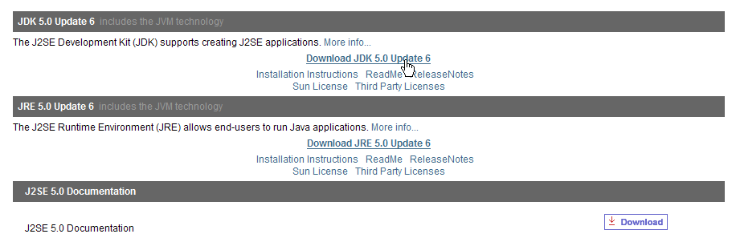
Schritt 2:

Schritt 3:
Starten Sie die Installation von JDK 1.5 anhand der heruntergeladenen Datei.
2.2. Der Tomcat-5-Servlet-Container
Um Servlets auszuführen, benötigen wir einen Servlet-Container. Wir stellen hier einen davon vor, Tomcat 5.x, der unter der URL http://tomcat.apache.org/ verfügbar ist. Wir beschreiben die Vorgehensweise (Stand: Mai 2006) für die Installation. Falls bereits eine frühere Version von Tomcat installiert ist, sollte diese zuvor deinstalliert werden.

Um das Produkt herunterzuladen, folgen Sie dem oben angegebenen Link [Tomcat 5.x]:

Man kann die für die Windows-Plattform bestimmte .exe-Datei herunterladen. Sobald diese heruntergeladen ist, startet man die Installation von Tomcat:
Führen Sie [next] aus ->

Die Lizenzbedingungen akzeptieren ->

Führen Sie [next] aus ->

Den vorgeschlagenen Installationsordner akzeptieren oder mit [Browse] ändern ->
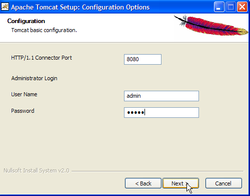
Legen Sie den Benutzernamen und das Passwort des Tomcat-Server-Administrators fest. Hier wurde [admin / admin] eingegeben ->

Tomcat 5.x benötigt JRE 1.5. Normalerweise sollte es die auf Ihrem Rechner installierte Version finden. Oben ist der Pfad zu der in Abschnitt 2.1 heruntergeladenen Version JRE 1.5 angegeben. Wenn kein JRE gefunden wird, geben Sie dessen Stammverzeichnis über die Schaltfläche [1] an. Anschließend verwenden Sie die Schaltfläche [Install], um Tomcat 5.x zu installieren ->
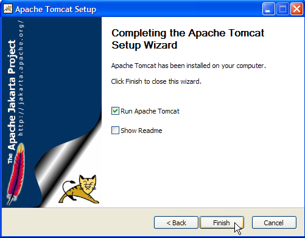
Die Schaltfläche „[Finish]“ schließt die Installation ab. Die Installation von Tomcat wird durch ein Symbol rechts in der Windows-Taskleiste angezeigt:

Ein Rechtsklick auf dieses Symbol ermöglicht den Zugriff auf die Befehle zum Starten und Beenden des Servers:

Wir verwenden die Option [Stop service], um den Webserver nun zu beenden:

Beachten Sie die Statusänderung des Symbols. Dieses kann aus der Taskleiste entfernt werden:

Die Installation von Tomcat erfolgte in dem vom Benutzer gewählten Ordner, den wir fortan <tomcat> nennen werden. Die Verzeichnisstruktur dieses Ordners für die heruntergeladene Tomcat-Version 5.5.17 sieht wie folgt aus:

Durch die Installation von Tomcat wurden einige Verknüpfungen im Menü [Démarrer] angelegt. Wir verwenden den unten stehenden Link [Monitor], um das Tool zum Stoppen und Starten von Tomcat zu starten:

Dort finden wir dann das zuvor gezeigte Symbol wieder:
Der Tomcat-Monitor kann durch einen Doppelklick auf dieses Symbol aktiviert werden:

Mit den Schaltflächen [Start - Stop - Pause] – „Restart“ können wir den Server starten, stoppen und neu starten. Wir starten den Server über [Start] und rufen anschließend mit einem Browser die URL http://localhost:8080 auf. Es sollte eine Seite ähnlich der folgenden angezeigt werden:

Über die folgenden Links können Sie überprüfen, ob Tomcat korrekt installiert wurde:
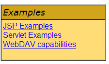
Alle Links auf der Seite [http://localhost:8080] sind interessant, und der Leser ist eingeladen, sie zu erkunden. Wir werden später noch auf die Links zurückkommen, mit denen sich die auf dem Server bereitgestellten Webanwendungen verwalten lassen:

2.3. Bereitstellung einer Webanwendung auf dem Tomcat-Server
Literaturhinweise [ref1]: Kapitel 1, Kapitel 2: 2.3.1, 2.3.2, 2.3.3
2.3.1. Bereitstellung
Eine Webanwendung muss bestimmte Regeln erfüllen, um in einem Servlet-Container bereitgestellt werden zu können. Sei <webapp> der Ordner einer Webanwendung. Eine Webanwendung besteht aus:
im Ordner <webapp>\WEB-INF\classes | |
im Ordner <webapp>\WEB-INF\lib | |
im Ordner <webapp> oder in Unterordnern |
Die Webanwendung wird über die Datei XML konfiguriert: <webapp>\WEB-INF\web.xml.
Erstellen wir die Webanwendung mit folgender Verzeichnisstruktur:
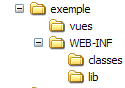
Die oben genannte Verzeichnisstruktur wird mit dem Windows-Explorer erstellt. Die Ordner „[classes]“ und „[lib]“ sind hier leer. Der Ordner „[vues]“ enthält eine statische Datei „HTML“:

deren Inhalt wie folgt lautet:
<html>
<head>
<title>Application exemple</title>
</head>
<body>
Application exemple active ....
</body>
</html>
Wenn man diese Datei in einem Browser lädt, erhält man die folgende Seite:
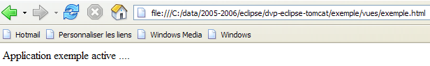
Der vom Browser angezeigte Code URL zeigt, dass die Seite nicht von einem Webserver bereitgestellt, sondern direkt vom Browser geladen wurde. Wir möchten nun, dass sie über den Tomcat-Webserver verfügbar ist.
Kehren wir zur Verzeichnisstruktur von <tomcat> zurück:
Die Konfiguration der auf dem Tomcat-Server bereitgestellten Webanwendungen erfolgt mithilfe von XML-Dateien, die sich im Ordner [<tomcat>\conf\Catalina\localhost] befinden:
 |  |
Diese XML-Dateien können manuell erstellt werden, da ihre Struktur einfach ist. Anstatt diesen Ansatz zu wählen, werden wir die Web-Tools nutzen, die uns Tomcat zur Verfügung stellt.
2.3.2. Tomcat-Verwaltung
Auf der Startseite http://localhost:8080 bietet der Server Links zur Verwaltung an:

Über den Link [Tomcat Administration] können wir die Ressourcen konfigurieren, die Tomcat den darin bereitgestellten Webanwendungen zur Verfügung stellt, beispielsweise einen Verbindungspool zu einer Datenbank. Folgen wir dem Link:

Die angezeigte Seite weist darauf hin, dass für die Verwaltung von Tomcat 5.x ein spezielles Paket namens „admin“ erforderlich ist. Kehren wir zur Tomcat-Website zurück:

Laden wir die ZIP-Datei mit der Bezeichnung [Administration Web Application] herunter und entpacken sie anschließend. Ihr Inhalt sieht wie folgt aus:

Der Ordner „[admin]“ muss in den Ordner „[<tomcat>\server\webapps]“ kopiert werden, wobei <tomcat> der Ordner ist, in dem Tomcat installiert wurde: 5.x:

Der Ordner „[localhost]“ enthält eine Datei „[admin.xml]“, die in den Ordner „[<tomcat>\conf\Catalina\localhost]“ kopiert werden muss:

Beenden wir Tomcat und starten wir ihn neu, falls er aktiv war. Rufen wir anschließend mit einem Browser die Startseite des Webservers erneut auf:

Folgen wir dem Link [Tomcat Administration]. Wir gelangen zu einer Anmeldeseite:
Hinweis: Um die unten gezeigte Seite aufzurufen, musste ich zunächst die URL [http://localhost:8080/admin/index.jsp] manuell eingeben. Erst danach funktionierte der oben genannte Link [Tomcat Administration]. Ich weiß nicht, ob es sich dabei um einen Fehler meinerseits handelt oder nicht.
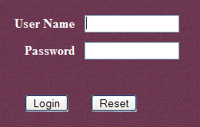 |  |
Hier müssen wir die Daten eingeben, die wir bei der Installation von Tomcat angegeben haben. In unserem Fall geben wir das Paar „admin / admin“ ein. Die Schaltfläche [Login] führt uns zur folgenden Seite:

Auf dieser Seite kann der Tomcat-Administrator
- Datenquellen (Data Sources) festzulegen sowie
- die für den E-Mail-Versand erforderlichen Informationen (Mail Sessions)
- Umgebungsdaten festzulegen, auf die alle Anwendungen zugreifen können (Environment Entries),
- die Benutzer/Administratoren von Tomcat zu verwalten (Users),
- Benutzergruppen (Groups) zu verwalten,
- Rollen zu definieren (= was ein Benutzer tun darf und was nicht),
- die Eigenschaften der vom Server bereitgestellten Webanwendungen festzulegen (Service Catalina)
Folgen wir dem obigen Link [Roles]:

Mit einer Rolle lässt sich festlegen, was ein Benutzer oder eine Benutzergruppe tun darf und was nicht. Einer Rolle werden bestimmte Rechte zugewiesen. Jeder Benutzer ist einer oder mehreren Rollen zugeordnet und verfügt über die entsprechenden Rechte. Die unten aufgeführte Rolle [manager] gewährt das Recht, die in Tomcat bereitgestellten Webanwendungen zu verwalten (Bereitstellung, Starten, Beenden, Entladen). Wir werden einen Benutzer mit dem Namen [manager] anlegen, den wir der Rolle [manager] zuweisen, damit er die Tomcat-Anwendungen verwalten kann. Dazu folgen wir dem Link [Users] auf der Verwaltungsseite:

Wir sehen, dass bereits eine Reihe von Benutzern vorhanden ist. Wir verwenden die Option [Create New User], um einen neuen Benutzer anzulegen:

Wir vergeben für den Benutzer „manager“ das Passwort „manager“ und weisen ihm die Rolle „manager“ zu. Mit der Schaltfläche [Save] bestätigen wir diesen Eintrag. Der neue Benutzer erscheint in der Benutzerliste:

Dieser neue Benutzer wird in die Datei [<tomcat>\conf\tomcat-users.xml] aufgenommen:

deren Inhalt wie folgt lautet:
- Zeile 10: der Benutzer [manager], der angelegt wurde
Eine weitere Möglichkeit, Benutzer hinzuzufügen, besteht darin, diese Datei direkt zu bearbeiten. Dies ist insbesondere dann erforderlich, wenn man versehentlich das Passwort des Administrators „admin“ oder des Managers vergessen hat.
2.3.3. Verwaltung der bereitgestellten Webanwendungen
Kehren wir nun zur Startseite [http://localhost:8080] zurück und folgen wir dem Link [Tomcat Manager]:

Wir gelangen nun zu einer Anmeldeseite. Wir melden uns als „manager / manager“, c.a.d, an – dem Benutzer mit der Rolle [manager], den wir gerade angelegt haben. Denn nur ein Benutzer mit dieser Rolle kann diesen Link nutzen. In Zeile 11 von [tomcat-users.xml] sehen wir, dass der Benutzer [admin] ebenfalls die Rolle [manager] hat. Wir könnten daher auch die Authentifizierung [admin / admin] verwenden.

Wir erhalten eine Seite, auf der die derzeit in Tomcat bereitgestellten Anwendungen aufgelistet sind:

Über die Formulare am Ende der Seite können wir eine neue Anwendung hinzufügen:

Hier möchten wir die zuvor erstellte Beispielanwendung in Tomcat bereitstellen. Dazu gehen wir wie folgt vor:

/Beispiel | der Name, der zur Bezeichnung der bereitzustellenden Webanwendung verwendet wird | |
C:\data\2005-2006\eclipse\dvp-eclipse-tomcat\Beispiel | das Verzeichnis der Webanwendung |
Um die Datei „[C:\data\2005-2006\eclipse\dvp-eclipse-tomcat\exemple\vues\exemple.html]“ zu erhalten, fordern wir von Tomcat die Dateien „URL“ und „[http://localhost:8080/exemple/vues/exemple.html]“ an. Der Kontext dient also dazu, dem Stammverzeichnis der bereitgestellten Webanwendung einen Namen zu geben. Wir verwenden die Schaltfläche „[Deploy]“, um die Anwendung bereitzustellen. Wenn alles gut läuft, erhalten wir die folgende Antwortseite:

und die neue Anwendung erscheint in der Liste der bereitgestellten Anwendungen:

Erläutern wir die Zeile im obigen Kontext /Beispiel:
Link zu http://localhost:8080/exemple | |
ermöglicht das Starten der Anwendung | |
dient zum Beenden der Anwendung | |
dient zum Neuladen der Anwendung. Dies ist beispielsweise erforderlich, wenn bestimmte Klassen zur Anwendung hinzugefügt, geändert oder daraus entfernt wurden. | |
Löschung des Kontexts [/exemple]. Die Anwendung verschwindet aus der Liste der verfügbaren Anwendungen. |
Nachdem unsere Beispielanwendung nun bereitgestellt ist, können wir einige Tests durchführen. Wir rufen die Seite [exemple.html] über die URL [http://localhost:8080/exemple/vues/exemple.html] auf:

Eine weitere Möglichkeit, eine Webanwendung auf dem Tomcat-Server bereitzustellen, besteht darin, die Angaben, die wir über die Weboberfläche gemacht haben, in einer Datei namens [contexte].xml im Ordner [<tomcat>\conf\Catalina\localhost] zu hinterlegen, wobei [contexte] der Name der Webanwendung ist.
Kehren wir zur Tomcat-Verwaltungsoberfläche zurück:

Löschen wir die Anwendung „[/exemple]“ zusammen mit ihrem Link „[Undeploy]“:

Die Anwendung [/exemple] ist nicht mehr in der Liste der aktiven Anwendungen enthalten. Definieren wir nun die folgende Datei [exemple.xml]:
Die Datei XML besteht aus einem einzigen <Context>-Tag, dessen Attribut docBase den Ordner definiert, der die bereitzustellende Webanwendung enthält. Speichern wir diese Datei unter <tomcat>\conf\Catalina\localhost:

Beenden wir Tomcat bei Bedarf und starten wir es neu, um anschließend die Liste der aktiven Anwendungen mit dem Tomcat-Administrator anzuzeigen:

Die Anwendung [/exemple] ist tatsächlich vorhanden. Rufen wir nun mit einem Browser die URL auf:
[http://localhost:8080/exemple/vues/exemple.html] auf:
Eine so bereitgestellte Webanwendung kann auf die gleiche Weise wie zuvor über den Link [Undeploy] aus der Liste der bereitgestellten Anwendungen entfernt werden:
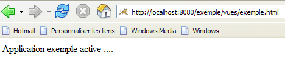
In diesem Fall wird die Datei [exemple.xml] automatisch aus dem Ordner [<tomcat>\conf\Catalina\localhost] gelöscht.
Um eine Webanwendung in Tomcat bereitzustellen, kann man schließlich auch deren Kontext in der Datei [<tomcat>\conf\server.xml] definieren. Auf diesen Punkt werden wir hier nicht näher eingehen.
2.3.4. Webanwendung mit Startseite
Wenn wir die URL „[http://localhost:8080/exemple/]“ aufrufen, erhalten wir folgende Antwort:

Dieses Ergebnis hängt von der Konfiguration von Tomcat ab. Bei früheren Versionen hätten wir den Inhalt des physischen Ordners der Anwendung [/exemple] erhalten. Es ist gut, dass Tomcat diese Anzeige nun standardmäßig verhindert.
Man kann es so einrichten, dass bei einer Anfrage an den Kontext eine sogenannte Startseite angezeigt wird. Dazu erstellen wir eine Datei namens [web.xml], die wir im Ordner <Beispiel>\WEB-INF ablegen, wobei <Beispiel> der physische Ordner der Webanwendung [/exemple] ist. Diese Datei sieht wie folgt aus:
- Zeilen 2–5: das Stamm-Tag <web-app> mit Attributen, die durch Kopieren und Einfügen aus der Datei [web.xml] der Tomcat-Anwendung [/admin] (<tomcat>/server/webapps/admin/WEB-INF/web.xml).
- Zeile 7: Der Anzeigename der Webanwendung. Dies ist ein frei wählbarer Name, der weniger Einschränkungen unterliegt als der Kontextname der Anwendung. Man kann dort beispielsweise Leerzeichen verwenden, was beim Kontextnamen nicht möglich ist. Dieser Name wird beispielsweise vom Tomcat-Administrator angezeigt:

- Zeile 8: Beschreibung der Webanwendung. Dieser Text kann anschließend programmgesteuert abgerufen werden.
- Zeilen 9–11: Die Liste der Startdateien. Das Tag <welcome-file-list> dient dazu, die Liste der Ansichten zu definieren, die angezeigt werden sollen, wenn ein Client den Anwendungskontext anfordert. Es können mehrere Ansichten vorhanden sein. Die erste gefundene Ansicht wird dem Client angezeigt. Hier haben wir nur eine: [/vues/exemple.html]. Wenn also ein Client die URL [/exemple] anfordert, wird ihm tatsächlich die URL [/exemple/vues/exemple.html] bereitgestellt.
Speichern wir diese Datei [web.xml] unter <Beispiel>\WEB-INF:

Wenn Tomcat noch aktiv ist, kann man es dazu zwingen, die Webanwendung [/exemple] über den Link [Recharger] neu zu laden:

Bei diesem „Neuladen“ liest Tomcat die in [<exemple>\WEB-INF] enthaltene Datei [web.xml] erneut ein, sofern diese vorhanden ist. Dies ist hier der Fall. Sollte Tomcat beendet worden sein, starten Sie ihn neu.
Rufen wir mit einem Browser die Datei URL [http://localhost:8080/exemple/] auf:

Der Mechanismus der Host-Dateien hat funktioniert.
2.4. Installation von Eclipse
Eclipse ist eine multisprachige Entwicklungsumgebung. Sie wird häufig in der Java-Entwicklung eingesetzt. Es handelt sich um ein Tool, das durch das Hinzufügen von sogenannten Plugins erweitert werden kann. Es gibt eine große Anzahl von Plugins, und genau darin liegt die Stärke von Eclipse.
Eclipse ist unter der URL [http://www.eclipse.org/downloads/] verfügbar:

Wir möchten Eclipse für die Webentwicklung in Java nutzen. Dafür gibt es eine Reihe von Plugins. Sie helfen bei der Überprüfung der Syntax von JSP-Seiten, XML-Dateien usw. und ermöglichen es, eine Webanwendung direkt in Eclipse zu testen. Wir werden eines dieser Plugins verwenden, das „Web Tools Package“ (WTP) heißt. Die übliche Vorgehensweise bei der Installation von Eclipse ist normalerweise wie folgt:
- Eclipse installieren
- die benötigten Plugins installieren
Das Plugin WTP benötigt seinerseits weitere Plugins, weshalb seine Installation recht komplex ist. Daher bietet die Eclipse-Website ein Paket an, das die Eclipse-Entwicklungsplattform und das Plugin WTP zusammen mit allen anderen Plugins enthält, die dieses benötigt. Dieses Paket ist auf der Eclipse-Website (Stand: Mai 2006) unter der URL [http://download.eclipse.org/webtools/downloads/] verfügbar:

Folgen wir dem obigen Link [1.0.2]:
Wir laden das Paket [wtp] über den obigen Link herunter. Die erhaltene ZIP-Datei enthält Folgendes:


Entpacken Sie diesen Inhalt einfach in einen Ordner. Wir nennen diesen Ordner fortan <eclipse>. Sein Inhalt sieht wie folgt aus:
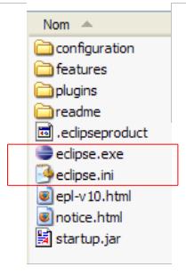
[eclipse.exe] ist die ausführbare Datei und [eclipse.ini] die dazugehörige Konfigurationsdatei. Sehen wir uns deren Inhalt an:
Diese Argumente werden beim Start von Eclipse wie folgt verwendet:
Man erzielt das gleiche Ergebnis wie mit der .ini-Datei, indem man eine Verknüpfung erstellt, die Eclipse mit denselben Argumenten startet. Erläutern wir diese:
- -vmargs: Gibt an, dass die folgenden Argumente für die Java-Virtual-Machine bestimmt sind, auf der Eclipse ausgeführt wird. Eclipse ist nämlich eine Java-Anwendung.
- -Xms40m: ?
- -Xmx256m: Legt die Speichergröße in MB fest, die der Java-Virtual-Machine (JVM) zugewiesen wird, die Eclipse ausführt. Standardmäßig beträgt diese Größe 256 MB, wie hier gezeigt. Sofern der Rechner es zulässt, sind 512 MB vorzuziehen.
Diese Argumente werden an die JVM übergeben, die Eclipse ausführt. Die JVM wird durch eine Datei namens [java.exe] oder [javaw.exe] repräsentiert. Wie wird diese Datei gefunden? Tatsächlich wird auf verschiedene Arten danach gesucht:
- in der Datei „PATH“ der Datei „OS“
- im Ordner <JAVA_HOME>/jre/bin, wobei JAVA_HOME eine Systemvariable ist, die den Stammordner eines JDK definiert.
- an einen Speicherort, der als Argument an Eclipse in der Form -vm <Pfad>\javaw.exe übergeben wird
Die letztgenannte Lösung ist vorzuziehen, da die beiden anderen anfällig für Unwägbarkeiten bei späteren Anwendungsinstallationen sind, die entweder den Pfad PATH des OS oder die Variable JAVA_HOME ändern können.
Wir erstellen daher die folgende Verknüpfung:

<eclipse>\eclipse.exe -vm "C:\Program Files\Java\jre1.5.0_06\bin\javaw.exe" -vmargs -Xms40m -Xmx512m | |
Eclipse-Installationsordner <eclipse> |
Anschließend starten wir Eclipse über diese Verknüpfung. Es erscheint ein erstes Dialogfeld:

Ein [workspace] ist ein Arbeitsbereich. Übernehmen wir die vorgeschlagenen Standardwerte. Standardmäßig werden die erstellten Eclipse-Projekte in dem in diesem Dialogfeld angegebenen Ordner <workspace> gespeichert. Es gibt jedoch eine Möglichkeit, dieses Verhalten zu umgehen. Das werden wir systematisch tun. Daher ist die in diesem Dialogfeld gegebene Antwort nicht von Bedeutung.
Nach diesem Schritt wird die Eclipse-Entwicklungsumgebung angezeigt:

Wir schließen die Ansicht [Welcome] wie oben vorgeschlagen:

Bevor wir ein Java-Projekt erstellen, konfigurieren wir Eclipse so, dass zum Kompilieren der Java-Projekte die Option JDK verwendet wird. Dazu wählen wir die Option [Window / Preferences / Java / Installed JREs ]:

Normalerweise sollte das JRE (Java Runtime Environment), das zum Starten von Eclipse selbst verwendet wurde, in der Liste der JRE enthalten sein. Dies ist normalerweise der einzige Eintrag. Über die Schaltfläche [Add] können weitere JRE hinzugefügt werden. Dazu muss der Stammordner des JRE angegeben werden. Die Schaltfläche „[Search]“ startet hingegen eine Suche nach „JREs“ auf der Festplatte. Dies ist eine gute Möglichkeit, um herauszufinden, wo sich die „JREs“-Dateien befinden, die man installiert und dann beim Wechsel zu einer neueren Version vergessen hat, zu deinstallieren. Oben ist das markierte JRE dasjenige, das zum Kompilieren und Ausführen der Java-Projekte verwendet wird.
Das JRE, das in unseren Beispielen verwendet wird, ist dasjenige, das in Abschnitt 2.1 installiert wurde und das auch zum Starten von Eclipse diente. Ein Doppelklick darauf öffnet die Eigenschaften:

Erstellen wir nun ein Java-Projekt „[File / New / Project]“:
 |  |
Wählen Sie „[Java Project]“ und anschließend „[Next]“ ->

In [2] geben wir einen leeren Ordner an, in dem das Java-Projekt installiert werden soll. In [1] vergeben wir einen Namen für das Projekt. Er muss nicht unbedingt den Namen seines Ordners tragen, wie das obige Beispiel vermuten lassen könnte. Anschließend klicken wir auf die Schaltfläche [Finish], um den Erstellungsassistenten abzuschließen. Damit akzeptieren wir die Standardwerte, die auf den folgenden Seiten des Assistenten vorgeschlagen werden.
Wir erhalten nun ein Java-Projektrahmenwerk:

Klicken wir mit der rechten Maustaste auf das Projekt „[test1]“, um eine Java-Klasse zu erstellen:


- in [1], dem Ordner, in dem die Klasse erstellt wird. Eclipse schlägt standardmäßig den Ordner des aktuellen Projekts vor.
- in [2], das Paket, in dem die Klasse abgelegt wird
- in [3] den Namen der Klasse
- in [4] legen wir fest, dass die statische Methode [main] generiert werden soll
Wir bestätigen den Assistenten mit [Finish]. Das Projekt wird daraufhin um eine Klasse erweitert:

Eclipse hat das Gerüst der Klasse generiert. Dieses wird durch einen Doppelklick auf das oben genannte [Test1.java] aufgerufen:
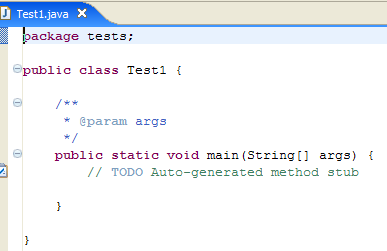
Wir ändern den obigen Code wie folgt:

Wir führen das Programm [Test1.java] aus: [clic droit sur Test1.java -> Run As -> Java Application]

Das Ergebnis der Ausführung wird im Fenster [Console] angezeigt:

2.5. Tomcat-Integration – Eclipse
Um mit Tomcat zu arbeiten und dabei in Eclipse zu bleiben, müssen wir diesen Server in der Eclipse-Konfiguration angeben. Dazu wählen wir die Option [File / New / Other]. Daraufhin erscheint der folgende Assistent:

Wir entscheiden uns dafür, einen neuen Server anzulegen. Dazu wählen wir das Symbol „[Server]“ oben aus und führen anschließend „[Next]“ aus:
Das Hinzufügen des Servers wird durch das Hinzufügen eines Ordners im Projekt-Explorer von Eclipse umgesetzt:
Um Tomcat über Eclipse zu verwalten, rufen wir die Ansicht „[Servers]“ mit der Option „[Window -> Show View -> Other -> Server]“ auf:
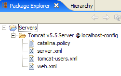

Wählen Sie „[OK]“. Daraufhin erscheint die Ansicht „[Servers]“:

In dieser Ansicht werden alle registrierten Server angezeigt, hier der Tomcat-5.5-Server, den wir gerade registriert haben. Ein Rechtsklick darauf öffnet die Befehle zum Starten, Stoppen und Neustarten des Servers:

Oben starten wir den Server. Beim Start werden eine Reihe von Protokollen in die Ansicht [Console] geschrieben:
Das Verständnis dieser Protokolle erfordert etwas Übung. Wir werden vorerst nicht näher darauf eingehen. Es ist jedoch wichtig zu überprüfen, ob sie keine Fehler beim Laden von Kontexten melden. Tatsächlich versucht der Tomcat-/Eclipse-Server beim Start, die Kontexte der von ihm verwalteten Anwendungen zu laden. Das Laden des Kontexts einer Anwendung beinhaltet das Auswerten ihrer Datei [web.xml] und das Laden einer oder mehrerer Klassen, die diesen initialisieren. Dabei können verschiedene Arten von Fehlern auftreten:
- Die Datei „[web.xml]“ weist syntaktische Fehler auf. Dies ist der häufigste Fehler. Es wird empfohlen, ein Tool zu verwenden, das die Gültigkeit eines XML-Dokuments bereits bei dessen Erstellung überprüfen kann.
- Bestimmte zu ladende Klassen wurden nicht gefunden. Diese werden in den Dateien „[WEB-INF/classes]“ und „[WEB-INF/lib]“ gesucht. In der Regel muss überprüft werden, ob die erforderlichen Klassen vorhanden sind und ob die in der Datei „[web.xml]“ deklarierten Klassen korrekt geschrieben sind.
Der über Eclipse gestartete Server hat nicht dieselbe Konfiguration wie der in Abschnitt 2.2 auf Seite 5 installierte. Um dies zu überprüfen, rufen wir die URL [http://localhost:8080] mit einem Browser auf:

Diese Antwort bedeutet nicht, dass der Server nicht funktioniert, sondern dass die angeforderte Ressource „/“ nicht verfügbar ist. Bei dem in Eclipse integrierten Tomcat-Server handelt es sich bei diesen Ressourcen um Webprojekte. Darauf werden wir später noch eingehen. Für den Moment beenden wir Tomcat:

Der bisherige Betriebsmodus kann geändert werden. Kehren wir zur Ansicht [Servers] zurück und doppelklicken wir auf den Tomcat-Server, um auf dessen Eigenschaften zuzugreifen:
 |  |
Das Kontrollkästchen [1] ist für den bisherigen Betriebsmodus verantwortlich. Wenn es aktiviert ist, werden die unter Eclipse entwickelten Webanwendungen nicht in den Konfigurationsdateien des zugehörigen Tomcat-Servers, sondern in separaten Konfigurationsdateien deklariert. Dadurch stehen die standardmäßig im Tomcat-Server definierten Anwendungen nicht zur Verfügung: [admin] und [manager], bei denen es sich um zwei nützliche Anwendungen handelt. Daher werden wir das Kontrollkästchen [1] deaktivieren und Tomcat neu starten:
 |  |
Anschließend rufen wir die URL [http://localhost:8080] mit einem Browser auf:

Wir sehen nun die in Abschnitt 2.3.3 auf Seite 15 beschriebene Funktionsweise.
In unseren vorherigen Beispielen haben wir einen Browser außerhalb von Eclipse verwendet. Man kann auch einen in Eclipse integrierten Browser verwenden:

Wir wählen oben den internen Browser aus. Um ihn aus Eclipse heraus zu starten, kann man das folgende Symbol verwenden:

Der tatsächlich gestartete Browser ist derjenige, der über die Option [Window -> Web Browser] ausgewählt wurde. In diesem Fall erhalten wir den internen Browser:

Starten wir bei Bedarf Tomcat aus Eclipse heraus und rufen wir in [1] die URL [http://localhost:8080] auf:

Folgen wir dem Link [Tomcat Manager]:

Das für den Zugriff auf die Anwendung [manager] erforderliche Paar [login / mot de passe] wird abgefragt. Entsprechend der zuvor vorgenommenen Tomcat-Konfiguration können wir [admin / admin] oder [manager / manager] eingeben. Daraufhin wird die Liste der bereitgestellten Anwendungen angezeigt:

Wir sehen die von uns erstellte Anwendung [personne]. Der zugehörige Link [Recharger] wird uns später noch nützlich sein.